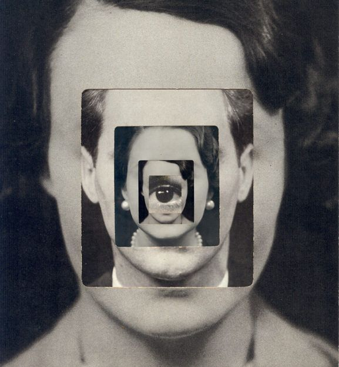
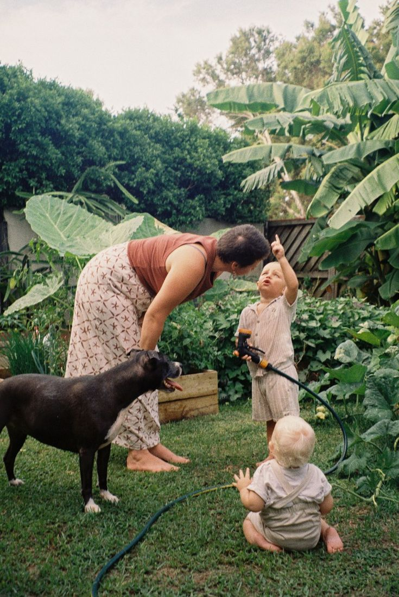
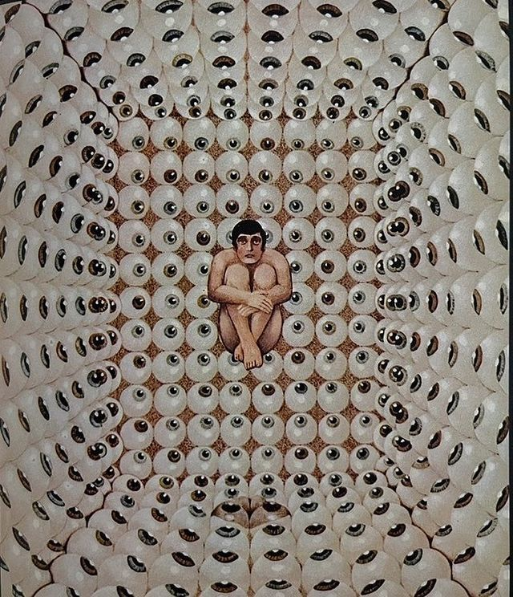

This site requires audio. Click anywhere to begin.
DESIGNING FRICTION
A call for friction in digital culture
- A manifesto by Luna Maurer and Roel Wouters.
The Case for Friction

Digital Futures
As designers, entrepreneurs and architects of digital culture we feel
the urge to refocus how we deal with our digital futures. Designing
Friction is a proposal to change the way we think when producing or
interacting with digital technology. Friction is resistance. It
derives from physical interaction between humans, and humans and
things. Its reach is holistic. All senses, elements and emotions play
a role: sight, sound, smell, taste, touch, air, earth, temperature,
agitation, passion, joy, sadness. With movement comes friction.
30 May 2025
(The more we move and act, the more friction we encounter. The more
friction there is, the more we engage and care.) Friction drives our
engagement.
Friction, in this context, is not synonymous with either anger or
conflict, nor is it malfunctioning technology. Friction is an essential
ingredient that makes up our humanness and sparks human connection.
FRICTION IS A LIVELY INSTRINSIC EXPERIENCE!
Predictable Futures
Luna Maurer
Digital technology has long pursued the goal of eliminating friction,
striving for seamlessness. We now navigate a sea of frictionless
experiences. Digital technology goes hand-in-hand with the loss of
physical resistance.
Luna Maurer
Digital technology turns our interactions with things into
interactions with devices. A thing is
split into its object, or form, and
its function. A device is the same object for each function.
Luna Maurer
It's your purse, your musical instrument and your letterbox, each of
which now demands the same bodily action.
Digital Shortcuts
Instead of using our whole hand to interact, we now often use our
fingertips to swipe screens or interact with air. Each new app or
innovation replaces a previously friction-laden human interaction
process. Transactions with machines are perceived to be smoother than
interactions with fellow humans.
20th Feb 2025
Death by convenience
Everything can be effortlessly and immediately accessed from behind
our screens. We stay home due to home-delivery, dating apps, online
classes and endless on-demand entertainment. We are facing
death by convenience.
In such a reality, movement is trimmed down to a minimum. In this
reality, data is king. In creating convenience, all our actions are
recorded and translated into data, rendering them readable and
predictable. The better the data, the better the predictability.
20th Feb 2025
Unpredictability, human messiness and unforeseen actions are all friction,
and counter this goal. Predictable futures can be controlled.
Luna Maurer
Keeping friction out maintains a fragile equilibrium. Enter AI —
technology becomes omnipresent, and evolves from being a tool, to
being a companion with humanlike appeal. We are on the verge of
committing our emotions to AI, plunging into an emotional dependency.
Luna Maurer
AI indulges us, consumes us. Its appeal gives us the comforts and
conveniences we learn to seek. To get satisfaction from interaction
with a model, you need to perform your predictable self. It becomes
almost impossible to step out, to live frictionfully. Our autonomy is
at stake.
Luna Maurer
Complete removal of friction means standing still. A completely
predictable future is no future, but a continuous present. In a world
where even our deepest desires can be foreseen, where we have lost our
autonomy, we long for what remains beyond the domain of data,
algorithms and databases and AI.
Embracing Friction

Frictionless Futures
A world headed for a frictionless reality begs the question: how can
we create a desirable future with digital technology? How can we
access, develop and relate to it?
20th Feb 2025
We like to see designing friction as a fundamental design principle when
working with digital culture. Instead of following design ethics that
strive to eliminate friction, we suggest to not only allow, but
EMBRACE FRICTION!
To facilitate it: design products with digital technology in a way that
makes space for our humanness. Here friction is a core ingredient. Digital
technology should create environments and situations in which we can truly
connect with each other, as well as with the unknown, the uncontrolled,
with all senses, all elements, all emotions.
It should create situations that are not predicted, measured and calculated beforehand; situations
that result from and amount to the present moment.
Embrace
uncomfortable
situations.
In
uncomfortable
environments
we
can
discover
the
richness
and
b r e a d t h
of friction.
Uncomfortable situations help you to feel structures you are not
adjusted to. You can learn and discover.
With friction we get immersed, we get creative, we get alive. Discomfort
allows us to experience boundaries both physically and mentally. These
are necessary and productive.
Designing friction is exploring boundaries.
Producing Resistance
Friction makes things slower and that is okay. The fastest response might
not be the best one to design for. Instant gratification is what digital
technology currently optimizes for.
This results in the loss of desire, waiting and boredom.

In praise of boredom
Avoiding boredom makes us pick up a device as soon as we have nothing
to do. Being bored lets you start new fascinations. Boredom gets us
into productive flow. When friction acts to slow things down it allows
us to step into the now. Designing friction is fuelling longing and
desire; it allows boredom and allows for a slower pace.
30 May 2025
Luna Maurer
When interacting with screens we lack resistance. Swiping screens
makes our world more superficial. Human life gains depth when having
thing-relations. Thing-relations tend to bring us together physically
and create connections.
Luna Maurer
Designing friction requires thinking about how to increase our
resistance. How can we engage our hands and whole bodies? How can
these bodily engagements bring us together?
Acknowledge the fulfilment in the non-positive. Today's digital technology
creates a society that is in 'pursuit of happiness', in awe of positivity.
Smoothness doesn't injure. It doesn't produce resistance. It enforces the
Like.
These mechanisms feed our desire for attention and being seen. Designing
friction cherishes the non-positive, the 'digital unseen', the
disagreement, the doubt, the vulnerable, the complicated. This is what
makes us human.
Perform your unpredictable self. Design environments and situations that
trigger and facilitate unpredictable behaviour. De-automise. Step out of
your pattern. Do something strange.
Friction perceived as an obstacle might in fact be a possibility for
connection.